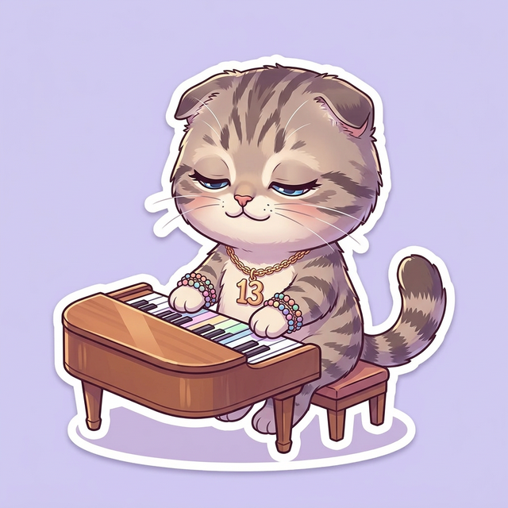

✦ この曲について
「Eldest Daughter」はアルバムのTrack 5——テイラーが最も個人的で傷つきやすい曲を置く伝統のポジション。「長女症候群」をテーマに、常に強くあらねばならなかった長女たちの仮面が剥がれる瞬間を描く。長女は最初の犠牲者（first lamb to the slaughter）として、弟や妹を守るために狼のふりをして生きてきた。しかし婚約者Travis Kelce（末っ子）の前では、その仮面を外して本当の自分を見せることができる。

🐱 Did You Know?
テイラーのTrack 5の伝統：Fearless→「White Horse」、1989→「All You Had To Do Was Stay」、folklore→「my tears ricochet」。全部が心の奥の告白📝
▶ Official Lyric Video
VERSE 1
Everybody's so punk on the internet
ネットではみんなパンクを気取る
Everyone's unbothered 'til they're not
みんな平気なフリ、本当は違うのに
Every joke's just trolling and memes
全てのジョークがトロールとミーム
Sad as it seems, apathy is hot
悲しいけれど、無関心がカッコいい
Everybody's cutthroat in the comments
コメント欄はみんな容赦ない
Every single hot take is cold as ice
全ての炎上意見は氷のように冷たい
When you found me, I said I was busy
あなたが私を見つけた時、忙しいって言った
That was a lie
あれは嘘だった
PRE-CHORUS
I have been afflicted by a terminal uniqueness
末期的な個性に苦しめられてきた
I've been dying just from trying to seem cool
カッコつけようとするだけで死にそうだった
CHORUS
But I'm not a bad bitch
でも私は「bad bitch」じゃない
And this isn't savage
これは「savage」でもない
But I'm never gonna let you down
でも絶対にがっかりさせない
I'm never gonna leave you out
絶対にひとりぼっちにしない
So many traitors
裏切り者だらけの中で
Smooth operators
口の上手い詐欺師たち
But I'm never gonna break that vow
でもその誓いは絶対に破らない
「bad bitch」「savage」はSNS文化で褒め言葉として使われるが、テイラーは自分はそういうタイプではないと正直に告白。その代わりに、誠実さを約束する。
VERSE 2
You know, the last time I laughed this hard was
こんなに笑ったのは最後いつだったか
On the trampoline in somebody's backyard
誰かの裏庭のトランポリンの上
I must've been about eight or nine
8歳か9歳くらいだったかな
That was the night I fell off and broke my arm
あの夜、落ちて腕を折った
cautious discretion
慎重で控えめ
When your first crush crushes something kind
初恋が優しい何かを壊した時
When I said I don't believe in marriage
結婚なんて信じないって言った時
That was a lie
あれは嘘だった
子供時代のトランポリンの思い出——楽しさの直後に痛みが来る。長女らしい「cautious discretion」（慎重さ）はその経験から学んだもの。「I don't believe in marriage — That was a lie」はTravisとの婚約を暗示。
PRE-CHORUS
Every eldest daughter was the first lamb to the slaughter
全ての長女は最初に犠牲になる子羊だった
So we all dressed up as wolves and we looked fire
だから私たちは狼に扮装した、最高にカッコよかった
CHORUS
But I'm not a bad bitch
でも私は「bad bitch」じゃない
And this isn't savage
これは「savage」でもない
But I'm never gonna let you down
でも絶対にがっかりさせない
I'm never gonna leave you out
絶対にひとりぼっちにしない
So many traitors
裏切り者だらけの中で
Smooth operators
口の上手い詐欺師たち
But I'm never gonna break that vow
でもその誓いは絶対に破らない
I'm never gonna leave you now, now, now
絶対に離れない、もう離れない
BRIDGE
We lie back
横になって
A beautiful, beautiful time-lapse
美しい、美しいタイムラプス
Ferris wheels, kisses, and lilacs
観覧車、キス、ライラック
And things I said were dumb
くだらないって言ってたこと
'Cause I thought that I'd never find that
見つけられないと思ってたから
Beautiful, beautiful life that
美しい、美しい人生が
Shimmers that innocent light back
あの純粋な光を取り戻してくれる
Like when we were young
子供の頃みたいに
ブリッジは曲の核心。「Ferris wheels, kisses, and lilacs」——子供の頃はくだらないと思っていた些細な幸せを、大人になって初めてその価値に気づく。長女特有の「早く大人にならなきゃ」という重荷から解放される瞬間。
POST-BRIDGE
Every youngest child felt
一番下の子はみんな思ってた
They were raised up in the wild
野生の中で育ったって
But now you're home
でも今、家に帰ってきた
FINAL CHORUS
'Cause I'm not a bad bitch
だって私は「bad bitch」じゃない
And this isn't savage
これは「savage」でもない
So many traitors
裏切り者だらけの中で
Smooth operators
口の上手い詐欺師たち
📱SNS時代の冷笑主義を描写。「unbothered」「apathy is hot」——無関心でいることがクールとされる文化への批判。Track 5の伝統通り、最も脆弱な感情を見せる。